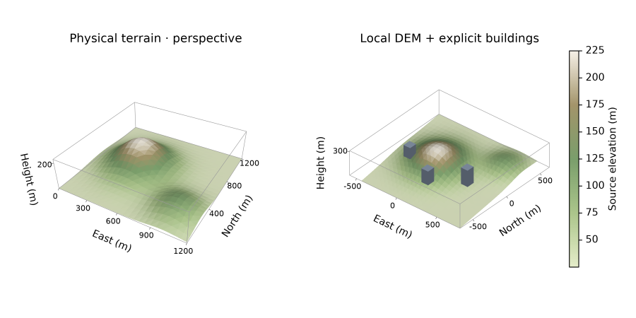

Galeria 3D original da Azimlib

Relevo e plantas são totalmente sintéticos, definidos em examples/terrain3d.py. Sem DEM externo, dados urbanos baixados ou renderer cartográfico de terceiros. Pillow apenas codifica/compõe pixels; Azimlib calcula câmera, clipping e oclusão.
Reproduzir no ambiente instalado de desenvolvimento:
python examples/terrain3d.py --output outputs/terrain3d
python examples/terrain3d.py --output outputs/terrain3d --show
Os textos, colorbar e eixos são editáveis pela API. SVG/PDF usam a camada de terreno raster; HTML offline é estático para a câmera. Veja contrato 3D. Inspeção da imagem e provas nativas programáticas Windows não equivalem a aceite humano Linux/macOS. Nenhuma publicação remota faz parte destas evidências.